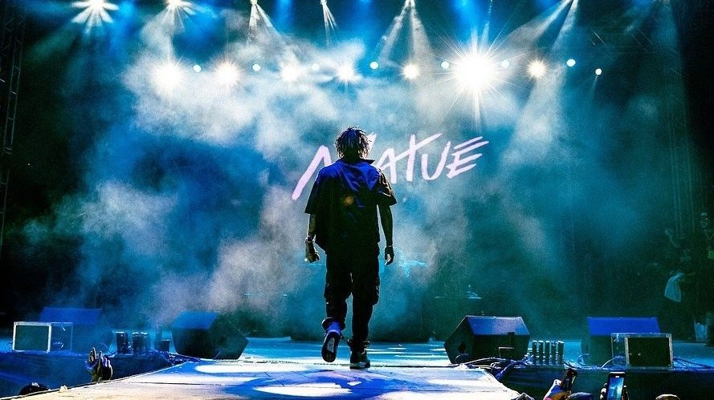

Matuê (Matheus Brasileiro Aguiar) nasceu em Fortaleza (CE) em 1993 e passou parte da infância em Oakland, na Califórnia. Ganhou destaque no trap brasileiro com o single “R B N”, em 2016, e se tornou um dos principais nomes do gênero no país.
Também é fundador da gravadora 30PRAUM, que fortaleceu a cena do trap no Nordeste.